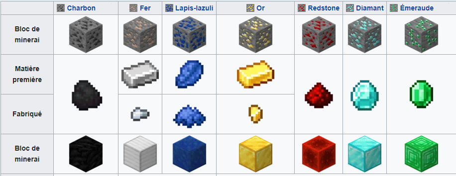
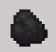
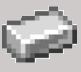

Minecraft


Les différents minerais dans le monde "normal"

- Le charbon

Le charbon est un minerais très commun, qui est souvent trouvable entre les couches 5 et 52. Et qui est généralement trouvable jusqu'à la couche 128. Au dessus de la couche 132 elle n'est plus trouvable.
La pioche minimal pour la miner est la pioche en bois, alors dès le débût de l'aventure nous pouvons la miner.
Le charbon peut servir à créer des torches mais aussi à faire cuire des viandes animales ou faire fondre des minerais.
- Le fer

Le fer est un minerais commun, qui est souvent trouvable entre les couches 5 et 54 et se trouve jusqu'à la couche 61. Au dessus de la couche 64 il n'est plus trouvable. La pioche minimal pour la miner est la pioche en fer et nous pouvons bien-sûr la miner avec une pioche plus efficace. Quand on trouve un minerais de fer, il faut le faire fondre dans un four ou dans un haut-fourneau pour le transformer en lingot de fer.Les lingots de fer peuvent être convertis en pépites de fer et vice-versa.
- Le lapis-lazuli
- L'or
- La redstone
- Le diamant
- L'émeraude